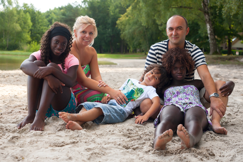

Strategies
These include strategies to combat any discrimination, stereotyping and biased words or/and actions. Along with the education, awareness, best role modelling and resources available to “Joyfull Childhood” family Day Care centre to form processes for the children to collaborate and solve problems. If a child speaks inappropriately, we remain calm and not expressing extreme disapproval but take that opportunity to explain honestly and openly about the comment being unfair and if they can find something in common and celebrate any differences.
I as a member of the staff can explain that our world is made up of so many different families, celebrations and lifestyles that it makes our life and our world very exciting, fun and fascinating.